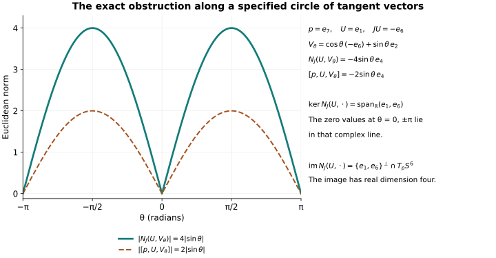

Almost complex structures, octonions, and integrability
The construction in this course gives complex coordinate charts on a compact six-dimensional manifold. The standard octonion construction gives an endomorphism of the tangent bundle of the round six-sphere. To compare these objects, we need the exact map from coordinate charts to a tangent-bundle endomorphism and the exact obstruction to reversing that map. We develop those maps first. We then calculate the obstruction for the octonion field, including its relation to the associator and all constants in its norm.
The multiplication formulas below are compared directly with John Baez, The Octonions, Section 2.2. The sphere background is treated by Panagiotis Konstantis and Maurizio Parton, Almost complex structures on spheres. The later coordinate construction follows the factorization of Malgrange as developed in C. Denson Hill and Michael Taylor, Integrability of Rough Almost Complex Structures, Sections 2–4. We keep their matrix conventions when comparing formulas and identify the sign correction needed in their equation 3.14.
1. From charts to a tensor, and from a tensor to a differential equation
Let \(M\) be a smooth real manifold of dimension \(2n\). An almost complex structure is a smooth real bundle endomorphism
\[ J:TM\longrightarrow TM,\qquad J^2=-\operatorname{id}_{TM}. \tag{1.1} \]
It makes each real tangent space a complex vector space by \((a+ib)v=av+bJv\). The coefficients \(a,b\) are real, and the relation \(J^2=-1\) verifies multiplication by two complex scalars. Conversely multiplication by \(i\) in a complex vector-bundle structure on \(TM\) satisfies (1.1). These two operations are inverse.
If \(z:U\to\mathbb C^n\) is a complex coordinate chart, let \(I\) denote multiplication by \(i\) on the real tangent spaces of \(\mathbb C^n\), and set
\[ J|_U=(Dz)^{-1}I(Dz). \tag{1.2} \]
For overlapping holomorphic charts \(z,w\), their transition derivative satisfies \(D(w\circ z^{-1})I=I D(w\circ z^{-1})\), so (1.2) agrees on the overlap. A complex atlas therefore defines an almost complex structure. A structure obtained in this way is called integrable.
The inverse problem asks for a local map \(F:U\to\mathbb C^n\), with invertible real differential, satisfying
\[ dF\circ J=i\,dF. \tag{1.3} \]
Such maps are precisely the required complex coordinate charts: the real inverse-function theorem makes them charts, and the chain rule makes their transition maps satisfy the ordinary Cauchy–Riemann equations. For completeness, a \(C^1\) map between open subsets of \(\mathbb C^n\) whose differential is complex-linear is holomorphic. On a closed polydisc in its domain, each component is holomorphic in one variable with the others fixed, by the one-variable Cauchy–Riemann theorem. Apply the one-variable Cauchy integral formula in each variable successively. The resulting product Cauchy integral has a convergent multivariable power series on every smaller polydisc, and equals the original component. Thus the transitions are holomorphic in the atlas sense.
Complexify the real tangent bundle and extend \(J\) complex-linearly. Define
\[ \begin{gathered} T^{1,0}_JM=\ker(J-i),\qquad T^{0,1}_JM=\ker(J+i),\\ \pi^{1,0}=\tfrac12(1-iJ),\qquad \pi^{0,1}=\tfrac12(1+iJ). \end{gathered} \tag{1.4} \]
Multiplication of these operators gives \((\pi^{1,0})^2=\pi^{1,0}\), \((\pi^{0,1})^2=\pi^{0,1}\), \(\pi^{1,0}\pi^{0,1}=0\), and \(\pi^{1,0}+\pi^{0,1}=1\). Complex conjugation interchanges their images. In particular both eigenbundles have complex rank \(n\).
The Nijenhuis tensor used throughout this lesson is
\[ N_J(X,Y)=[JX,JY]-[X,Y]-J[JX,Y]-J[X,JY]. \tag{1.5} \]
Its sign is the negative of the convention in Hill–Taylor equation 1.2. Write \(N_{\mathrm{HT}}=-N_J\) when comparing those sources. Their zero conditions agree because multiplication by \(-1\) is an invertible bundle map.
We verify that (1.5) is a tensor rather than an operator depending on the chosen extensions of tangent vectors. Inserting \(fX\) for \(X\), the four extra derivative terms, in their displayed order, are
\[ -(JYf)JX,\quad (Yf)X,\quad -(Yf)X,\quad (JYf)JX. \tag{1.6} \]
They sum to zero. Thus \(N_J(fX,Y)=fN_J(X,Y)\). Skewness in \(X,Y\) gives linearity in the second argument as well. Substituting \(JX\) or \(JY\) in (1.5) and using \(J^2=-1\) also gives
\[ N_J(JX,Y)=N_J(X,JY)=-J N_J(X,Y). \tag{1.7} \]
These identities include the exact real-to-complex type information. For sections \(Z,W\) of \(T^{0,1}_JM\), complex bilinearity and \(JZ=-iZ\) give
\[ N_J(Z,W)=-2[Z,W]+2iJ[Z,W] =-4\pi^{1,0}[Z,W]. \tag{1.8} \]
For two sections of \(T^{1,0}_JM\) the corresponding formula is \(-4\pi^{0,1}[Z,W]\). For one section of each type all four terms in (1.5) cancel. Consequently
\[ N_J=0\quad\Longleftrightarrow\quad [\Gamma(T^{0,1}_JM),\Gamma(T^{0,1}_JM)] \subseteq\Gamma(T^{0,1}_JM). \tag{1.9} \]
The right side is involutivity. In complex coordinates the fields \(\partial/\partial\bar z_j\) span this bundle and commute; the bracket formula for their smooth linear combinations proves involutivity. Equations (1.8)–(1.9) prove that every integrable \(J\) has \(N_J=0\).
There is a useful scalar version of the same obstruction. Let \(\bar\partial_J f\) be the \((0,1)\) part of \(df\), and on forms define \(\bar\partial_J\) to be the \((p,q+1)\) component of the exterior derivative of a \((p,q)\) form. For \(Z,W\) of type \((0,1)\), the definition of exterior derivative gives
\[ \begin{aligned} (\bar\partial_J^2f)(Z,W) &=Z(Wf)-W(Zf)-(\bar\partial_Jf)([Z,W])\\ &=df\bigl(\pi^{1,0}[Z,W]\bigr) =-\tfrac14df\bigl(N_J(Z,W)\bigr). \end{aligned} \tag{1.10} \]
Thus the obstruction is both a bundle map and the failure of this first-order operator to square to zero on functions. All factors in their comparison are explicit.
2. Two octonion formulas and the exact map between them
We first construct the needed algebraic identities. This also fixes every multiplication sign used later. Represent the quaternions by
\[ Q(\alpha,\beta)= \begin{pmatrix}\alpha&\beta\\-\bar\beta&\bar\alpha\end{pmatrix}, \qquad \alpha,\beta\in\mathbb C. \tag{2.1} \]
Matrix multiplication gives
\[ Q(\alpha,\beta)Q(\gamma,\delta) =Q(\alpha\gamma-\beta\bar\delta, \alpha\delta+\beta\bar\gamma). \tag{2.2} \]
Conjugation \(q\mapsto\bar q\) is matrix adjoint; the norm squared is the determinant \(|\alpha|^2+|\beta|^2\). Hence \(|ab|=|a||b|\), \(\overline{ab}=\bar b\bar a\), and \(a\bar a=|a|^2\). The real part \(\operatorname{Re}a=\frac12\operatorname{tr}a\) is unchanged by cyclic permutation of a product. Set
\[ i=Q(i,0),\quad j=Q(0,1),\quad k=Q(0,i). \tag{2.3} \]
Direct multiplication gives \(ij=k,jk=i,ki=j\), their reversed products with minus signs, and \(i^2=j^2=k^2=-1\). The quaternion product is associative because it is matrix multiplication.
On \(\mathbb H\oplus\mathbb H\), the product used for our labelled sphere is
\[ (a,b)\cdot(c,d)=(ac-\bar d b,\;da+b\bar c), \quad \overline{(a,b)}=(\bar a,-b), \quad |(a,b)|^2=|a|^2+|b|^2. \tag{2.4} \]
Baez’s Cayley–Dickson formula in Section 2.2 is
\[ (a,b)\star(c,d)=(ac-d\bar b,\;\bar a d+cb), \quad (a,b)^*=(\bar a,-b). \tag{2.5} \]
Neither formula is being substituted silently for the other. Define
\[ \Phi:(\mathbb H\oplus\mathbb H,\cdot) \longrightarrow(\mathbb H\oplus\mathbb H,\star), \qquad \Phi(a,b)=(a,\bar b). \tag{2.6} \]
It is real-linear, norm preserving, fixes \((1,0)\), and has inverse itself. Most importantly,
\[ \begin{aligned} \Phi(a,b)\star\Phi(c,d) &=(ac-\bar d b,\;\bar a\bar d+c\bar b)\\ &=\bigl(ac-\bar d b,\;\overline{da+b\bar c}\bigr)\\ &=\Phi\bigl((a,b)\cdot(c,d)\bigr). \end{aligned} \tag{2.7} \]
Also \(\Phi(\overline{(a,b)})=(\bar a,-\bar b)=\Phi(a,b)^*\). Equations (2.6)–(2.7) prove a unital isometric real algebra isomorphism, including conjugation. They transport associators and cross products with no discarded term.
Hereafter write \(xy\) for (2.4), and call this algebra \(\mathbb O\). Its identity is \(1=(1,0)\). Expanding the norm gives
\[ \begin{aligned} |ac-\bar d b|^2 &=|a|^2|c|^2+|d|^2|b|^2-2\operatorname{Re}(ac\bar b d),\\ |da+b\bar c|^2 &=|d|^2|a|^2+|b|^2|c|^2+2\operatorname{Re}(dac\bar b). \end{aligned} \tag{2.8} \]
The displayed cross terms cancel by the cyclic trace identity in the associative quaternion algebra. Therefore
\[ |xy|^2=|x|^2|y|^2. \tag{2.9} \]
This calculation does not assume associativity of the octonions.
Let \(L_x\) be the real linear map \(y\mapsto xy\), and let \(L_x^*\) be its adjoint for the Euclidean inner product associated with (2.4). Polarizing (2.9) in \(y\) gives \(L_x^*L_x=|x|^2I\). Expanding \(|(1+tx)y|^2=|1+tx|^2|y|^2\) in real \(t\), and then polarizing in \(y\), gives
\[ L_x+L_x^*=2\operatorname{Re}(x)I. \tag{2.10} \]
For \(x\) in the seven-dimensional imaginary space \(\operatorname{Im}\mathbb O=1^\perp\), it follows that
\[ L_x^*=-L_x,\qquad L_x^2=-|x|^2I. \tag{2.11} \]
Applying the last identity to \(1\), and polarizing, gives \(x^2=-|x|^2\) and \(xy+yx=-2\langle x,y\rangle\) for imaginary \(x,y\). Also \(\operatorname{Re}(xy)=\langle L_xy,1\rangle=-\langle y,x\rangle\). Define their cross product by
\[ xy=-\langle x,y\rangle+x\times y. \tag{2.12} \]
It is imaginary, bilinear and skew. The identity \(\langle L_xy,L_x1\rangle=|x|^2\langle y,1\rangle=0\) proves perpendicularity to \(x\), and skewness then proves perpendicularity to \(y\). Separating real and imaginary parts of (2.9) gives
\[ |x\times y|^2=|x|^2|y|^2-\langle x,y\rangle^2. \tag{2.13} \]
Applying \(L_x^2\) to \(y\) and using (2.12) twice gives the full repeated-product identity
\[ x\times(x\times y)=-|x|^2y+\langle x,y\rangle x. \tag{2.14} \]
Finally \(L_x^*=-L_x\) gives \(\langle x\times y,z\rangle=-\langle x\times z,y\rangle\). Together with skewness in \(x,y\), this says that
\[ \varphi(x,y,z)=\langle x\times y,z\rangle \tag{2.15} \]
is an alternating trilinear form. Equations (2.13)–(2.15) are proved consequences of the original product; none requires suppressing its nonassociativity.
Use the ordered orthonormal basis
\[ \begin{gathered} e_1=(i,0),\ e_2=(j,0),\ e_3=(k,0),\ e_4=(0,1),\\ e_5=(0,i),\ e_6=(0,j),\ e_7=(0,k). \end{gathered} \tag{2.16} \]
The complete imaginary multiplication table is specified by the oriented triples
\[ 123,\quad145,\quad176,\quad246,\quad257,\quad347,\quad365. \tag{2.17} \]
In a triple \(abc\), the products \(e_ae_b=e_c,e_be_c=e_a,e_ce_a=e_b\) have positive sign; reversed products are negative, and \(e_a^2=-1\). Each unordered pair of distinct indices occurs in exactly one triple, so this specifies all products. Substituting (2.3) in (2.4) verifies the seven displayed triples and hence, by skewness, the entire table.
3. The round six-sphere and its complete Nijenhuis tensor
Let
\[ S^6=\{p\in\operatorname{Im}\mathbb O:|p|=1\}, \qquad T_pS^6=p^\perp, \qquad J_pU=p\times U. \tag{3.1} \]
Equation (2.14) gives \(J_p^2U=-U\) on \(p^\perp\), with the coefficient \(|p|^2=1\) retained from the defining sphere. Perpendicularity makes \(J_pU\) tangent, and (2.13) gives \(|J_pU|=|U|\). Thus (3.1) is a smooth orthogonal almost complex structure for the round metric.
Write \(D\) for ambient differentiation and \(\nabla\) for tangential projection. Differentiating \(\langle V,p\rangle=0\) in a tangent direction \(U\) gives
\[ D_UV=\nabla_UV-\langle U,V\rangle p. \tag{3.2} \]
This connection preserves the induced metric and has zero torsion, directly by projection of the ambient derivative. It is the round Levi-Civita connection. Differentiating \(JV=p\times V\), using (3.2), and projecting tangentially yields
\[ A(U,V):=(\nabla_UJ)V =U\times V-\langle U\times V,p\rangle p. \tag{3.3} \]
The normal contribution to \(p\times D_UV\) is zero because \(p\times p=0\). Hence (3.3) includes the entire derivative. It is skew in \(U,V\). Differentiating \(J^2=-1\) gives \(A(U,JV)=-JA(U,V)\); using skewness gives the other identity
\[ A(JU,V)=A(U,JV)=-JA(U,V). \tag{3.4} \]
For a torsion-free connection, substitute \([X,Y]=\nabla_XY-\nabla_YX\) into (1.5). Terms containing derivatives of \(X,Y\) cancel, leaving
\[ N_J(U,V)=A(JU,V)-A(JV,U)+JA(V,U)-JA(U,V). \tag{3.5} \]
Skewness and (3.4) turn each of the four terms into \(-JA(U,V)\). We have therefore proved
\[ N_J(U,V)=-4JA(U,V)=-4p\times(U\times V). \tag{3.6} \]
No normal term was dropped in the last equality: it is annihilated exactly by \(p\times p=0\). Alternation of (2.15) identifies the coefficient of that normal term as \(\langle U\times V,p\rangle=\langle JU,V\rangle\). The norm of the orthogonal projection in (3.3) is therefore
\[ |N_J(U,V)|^2 =16\bigl(|U|^2|V|^2-\langle U,V\rangle^2 -\langle JU,V\rangle^2\bigr). \tag{3.7} \]
At any \(p\), choose a unit \(U\in T_pS^6\), and a unit \(V\) perpendicular to \(U,JU\) in that six-dimensional tangent space. Then (3.7) gives \(|N_J(U,V)|=4\). Thus \(N_J\) is nonzero at every point, and (1.9) proves that the particular field (3.1) is not integrable.
The associated real two-form is \(\omega(U,V)=\langle JU,V\rangle\). The exterior derivative of a two-form for a torsion-free connection is the cyclic sum of its covariant derivative. Using (3.3) and pairing with a tangent \(W\), the normal term disappears by \(\langle p,W\rangle=0\), and all three cyclic terms agree by alternation. Hence
\[ d\omega(U,V,W)=3\langle U\times V,W\rangle. \tag{3.8} \]
For our labels, at \(p=e_7\),
\[ Je_1=-e_6,\quad Je_2=e_5,\quad Je_3=e_4, \quad N_J(e_1,e_2)=-4e_4, \quad d\omega(e_1,e_2,e_3)=3. \tag{3.9} \]
Every equality follows from (2.17), so (3.9) fixes both the tensor convention and the orientation-sensitive multiplication signs.
There is also an orientation sign to retain. At \(e_7\), the complex-oriented real basis \((e_1,Je_1,e_2,Je_2,e_3,Je_3)\) is \((e_1,-e_6,e_2,e_5,e_3,e_4)\). Its permutation of \((e_1,\ldots,e_6)\) has six inversions and one additional minus sign, hence determinant \(-1\). The latter basis is positively oriented for the outward orientation of \(S^6\subset\mathbb R^7\), because \((e_7,e_1,\ldots,e_6)\) has positive determinant. Thus this labelled octonion field induces the negative of the outward orientation. The sign is constant on the connected sphere. It will appear explicitly in its top Chern number below.
4. The associator, the exact kernel, and the complex obstruction map
The associator records the precise defect of associativity:
\[ [x,y,z]_{\mathbb O}=(xy)z-x(yz). \tag{4.1} \]
For \(p,U,V\) in (3.1), set \(\alpha=\langle JU,V\rangle\). Expand both original products in (4.1), using only (2.12):
\[ \begin{aligned} (pU)V&=-\alpha+(JU)\times V,\\ p(UV)&=-\langle U,V\rangle p-\alpha+p\times(U\times V). \end{aligned} \tag{4.2} \]
Both scalar terms \(-\alpha\) are displayed and cancel. Alternation and \(J^2=-1\) give \(\langle(JU)\times V,p\rangle=\langle J(JU),V\rangle=-\langle U,V\rangle\). Consequently the remaining first two terms are exactly \((JU)\times V+\langle U,V\rangle p=A(JU,V)\). Equation (3.4) now gives
\[ [p,U,V]_{\mathbb O}=-2JA(U,V), \qquad \boxed{N_J(U,V)=2[p,U,V]_{\mathbb O}}. \tag{4.3} \]
For the Hill–Taylor tensor convention the coefficient is \(-2\). The algebra isomorphism (2.6) transports (4.3) to Baez’s product, because applying a homomorphism to the two terms of (4.1) gives their corresponding two terms in the target algebra. This is the exact relation between the algebraic defect and the geometric tensor.
We next describe the object cut out by the obstruction, rather than only asserting that it is nonzero. For a fixed nonzero tangent \(U\), define the real linear map
\[ \mathcal N_U:T_pS^6\longrightarrow T_pS^6, \qquad \mathcal N_U(V)=N_J(U,V), \qquad W_U=\{U,JU\}^{\perp}\subset T_pS^6. \tag{4.4} \]
Since \(U\) and \(JU\) are perpendicular and have the same norm, the full orthogonal decomposition is
\[ V=\frac{\langle U,V\rangle}{|U|^2}U +\frac{\langle JU,V\rangle}{|U|^2}JU+V_\perp, \qquad V_\perp\in W_U. \tag{4.5} \]
Substitution in (3.7) gives
\[ |\mathcal N_U(V)|^2=16|U|^2|V_\perp|^2, \qquad \ker\mathcal N_U=\operatorname{span}_{\mathbb R}\{U,JU\}. \tag{4.6} \]
Thus a real two-plane generated by independent \(U,V\) has zero octonionic associator with \(p\) exactly when it is the complex line generated by \(U\). The two conditions are equivalent by (4.3), not merely formally similar.

Let \(A_U(V)=A(U,V)\). The identity (2.14), with skewness, gives \(U\times JU=U\times(p\times U)=|U|^2p\). If \(V\in W_U\), then \(\langle U\times V,p\rangle=\langle JU,V\rangle=0\), and \(\langle U\times V,JU\rangle=-\langle U\times JU,V\rangle=0\). Therefore \(A_U(V)=U\times V\) lies in \(W_U\). Applying (2.14) again gives
\[ A_U^2|_{W_U}=-|U|^2I, \qquad A_UJ=-JA_U, \qquad \mathcal N_U^2|_{W_U}=-16|U|^2I. \tag{4.7} \]
The middle identity is (3.4), and the last follows by multiplying \(\mathcal N_U=-4JA_U\) twice. Hence the image of \(\mathcal N_U\) is exactly \(W_U\), its rank is four, and its inverse on \(W_U\) is
\[ (\mathcal N_U|_{W_U})^{-1} =-\frac{1}{16|U|^2}\mathcal N_U|_{W_U}. \tag{4.8} \]
Equation (4.8) constructs the connecting map from every vector in the image back to an argument of the tensor. It also shows that the four nonzero real singular values are \(4|U|\).
The complex form of the obstruction is even more precise. Extend \(N_J\) complex-bilinearly. Equation (1.8) defines a complex bundle map
\[ \mathscr N:\Lambda^2_{\mathbb C}T^{0,1}_JS^6 \longrightarrow T^{1,0}_JS^6. \tag{4.9} \]
We prove that it is an isomorphism at every point. Choose unit vectors \(u_1,u_2\) with \(u_2\perp u_1,Ju_1\), and set \(u_3=A(u_1,u_2)=u_1\times u_2\). Equations (2.13), (3.3), and (4.7) show that \(u_3\) is unit and perpendicular to \(u_1,Ju_1\). It is also perpendicular to \(u_2,Ju_2\): perpendicularity to \(u_2\) is a cross-product identity, and \(\langle u_1\times u_2,Ju_2\rangle=\langle u_1,u_2\times Ju_2\rangle=\langle u_1,p\rangle=0\). Metric compatibility with \(J\) then shows that \(u_1,Ju_1,u_2,Ju_2,u_3,Ju_3\) is an orthonormal real basis.
The repeated-product identity gives
\[ A(u_1,u_2)=u_3,\qquad A(u_2,u_3)=u_1,\qquad A(u_3,u_1)=u_2. \tag{4.10} \]
For example \(u_2\times(u_1\times u_2)=u_1\) follows from (2.14) after reversing the inner product, and the result is tangent, so its normal projection is zero. Define complex bases
\[ Z_a=\tfrac12(u_a-iJu_a),\qquad \bar Z_a=\tfrac12(u_a+iJu_a),\quad a=1,2,3. \tag{4.11} \]
Using (1.7), expansion of these four terms gives \(N_J(\bar Z_a,\bar Z_b)=\frac12\{N_J(u_a,u_b)-iJN_J(u_a,u_b)\}\). Together with (3.6) and (4.10), this yields
\[ \mathscr N(\bar Z_2\wedge\bar Z_3)=-4iZ_1, \quad \mathscr N(\bar Z_3\wedge\bar Z_1)=-4iZ_2, \quad \mathscr N(\bar Z_1\wedge\bar Z_2)=-4iZ_3. \tag{4.12} \]
In the displayed ordered bases its determinant is \((-4i)^3=64i\), and its inverse sends \(Z_c\) to \((i/4)\bar Z_a\wedge\bar Z_b\) for the corresponding cyclic pair. This proves the isomorphism claim. By (1.8), the projected bracket map is exactly \(-\mathscr N/4\). By (1.10), the scalar failure of \(\bar\partial_J^2=0\) is its dual evaluation. Thus the algebra, tangent tensor, projected bracket and scalar differential operator are linked by proved maps.
5. What changes under a diffeomorphism or a complex atlas
Let \(\phi:M\to M'\) be a smooth diffeomorphism, and let \(J'\) be an almost complex structure on \(M'\). Its pullback is
\[ J^\phi_p=(D\phi_p)^{-1}J'_{\phi(p)}D\phi_p. \tag{5.1} \]
It is smooth and squares to \(-1\). For vector fields the differential carries brackets to brackets: \(\phi_*[X,Y]=[\phi_*X,\phi_*Y]\). To verify this identity, apply both sides to a smooth function \(f\) on \(M'\): each equals \(X(Y(f\circ\phi))-Y(X(f\circ\phi))\), transported by \(\phi^{-1}\). Substituting this identity in all four terms of (1.5) gives
\[ D\phi_p\,N_{J^\phi}(U,V) =N_{J'}(D\phi_pU,D\phi_pV). \tag{5.2} \]
If \(J'\) comes from complex charts \(z_\alpha\), then \(z_\alpha\circ\phi\) are complex charts inducing (5.1). Conversely an atlas for \(J^\phi\) transports through \(\phi^{-1}\). Thus integrability is preserved exactly under (5.1).
Apply (1.2) directly to the holomorphic quotient and gluing charts constructed in lessons 1–5. Their holomorphic transition maps give a tensor \(J_X\) on the actual manifold \(X\), and (1.8) gives \(N_{J_X}=0\). This statement uses the charts already proved to exist. It is independent of the separate smooth-recognition argument in lesson 7.
The local constructions also show why the octonionic calculation cannot obstruct all conceivable complex structures on the same underlying smooth manifold. Equation (3.7) proves a statement about the specific field (3.1). Equation (5.2) proves that no diffeomorphism can carry that field to a field arising from holomorphic charts, because an invertible differential cannot carry a nonzero tensor to zero. The exact obstruction distinguishes these fields while preserving the possibility of other fields on the same tangent bundle.
There is a second constraint supplied by compactness. On any compact oriented \(2n\)-manifold, a closed two-form \(\omega\) satisfying \(\omega(v,Jv)>0\) for an almost complex structure has \(\int_M\omega^n>0\) in the associated orientation. In a complex basis, a positive compatible form has positive determinant; more generally taming gives the same orientation through the path to its positive \((1,1)\) part, since the value on \((v,Jv)\) remains positive along that path. If \(H^2(M;\mathbb R)=0\), then \(\omega=d\alpha\), and closedness gives
\[ \omega^n=d(\alpha\wedge\omega^{n-1}),\qquad \int_M\omega^n=0 \tag{5.3} \]
by Stokes’ theorem. For the application to a Hermitian metric we only need the compatible case: at a unitary real basis \(v_1,Jv_1,\ldots,v_n,Jv_n\), one has \(\omega^n(v_1,Jv_1,\ldots,v_n,Jv_n)=n!\). In particular a complex structure on a compact six-manifold with the integral cohomology calculated in lesson 7 cannot have a Kähler metric. This is a direct map from the exactness of a two-form to a contradiction with its volume integral; it does not identify the round form (3.8) with another metric’s form.
6. The full coordinate equation and its change of variables
We now prove the smooth coordinate-existence theorem. Fix a point \(p\) of a smooth \(2n\)-manifold with a smooth almost complex structure \(J\). Begin with real coordinates \(y\), with \(y(p)=y_p\). Choose a real basis \(v_1,J_pv_1,\ldots,v_n,J_pv_n\) of the tangent space. Such a basis is obtained by successively choosing a vector outside the previously chosen \(J_p\)-invariant span; the relation \(J_p^2=-1\) ensures that each step adds two independent vectors. Let \(C\) be the invertible real matrix carrying this basis to the standard ordered real basis of \(\mathbb C^n\), and put
\[ z=C(y-y_p),\qquad J_z=CJ_yC^{-1}. \tag{6.1} \]
This is an exact coordinate comparison; it retains the original field \(J_y\) by its displayed inverse. At \(z=0\), \(J_z=I\). The projection of \(T^{0,1}_J\) onto the span of the coordinate fields \(\partial_{\bar z_j}\) is therefore invertible near zero, by continuity of its determinant. Hence that eigenbundle has a unique frame
\[ L_j=\partial_{\bar z_j}-\sum_{k=1}^n A_{jk}(z)\partial_{z_k}, \qquad A(0)=0. \tag{6.2} \]
The functions \(A_{jk}\) are smooth, since they are obtained by inverting that finite matrix of smooth coefficients. A row vector \(F=(F_1,\ldots,F_n)\) satisfies (1.3) precisely when all \(L_jF_\ell\) vanish, or
\[ \partial_{\bar z}F=A\partial_zF. \tag{6.3} \]
Here \(\partial_{\bar z}F\) and \(\partial_zF\) are matrices with derivative index in the row and function index in the column. This order matters in all subsequent products.
Compute the bracket directly. It has no \(\partial_{\bar z}\) component, and its coefficient row in the \(\partial_z\) directions is
\[ -\partial_{\bar z_j}A_k+\partial_{\bar z_k}A_j +A_j\partial_z A_k-A_k\partial_z A_j. \tag{6.4} \]
Because no nonzero combination of the \(L_j\) has zero \(\partial_{\bar z}\) component, involutivity is equivalent here to the literal commutation relations \([L_j,L_k]=0\). By (1.9) it is equivalent to
\[ \partial_{\bar z_k}A_j+A_j\partial_z A_k =\partial_{\bar z_j}A_k+A_k\partial_z A_j. \tag{6.5} \]
Let \(H\) be a real local diffeomorphism close to the identity, write \(\zeta=H(z)\), and seek \(F=G\circ H\). Suppose \(\partial_{\bar\zeta}G=B\partial_\zeta G\). The chain rule, in the row convention of (6.3), gives
\[ \partial_{\bar z}H+(\partial_{\bar z}\bar H)(B\circ H) =A\{\partial_z H+(\partial_z\bar H)(B\circ H)\}. \tag{6.6} \]
Thus the exact transformed coefficient matrix is
\[ E:=B\circ H =-(\partial_{\bar z}\bar H-A\partial_z\bar H)^{-1} (\partial_{\bar z}H-A\partial_zH). \tag{6.7} \]
The inverse exists near \((H,A)=(\operatorname{id},0)\), where its matrix is \(I\). In particular \(H=\operatorname{id}\) gives \(B=A\). The transformed field is \(DH\,J\,(DH)^{-1}\), as follows by applying the chain rule to vectors annihilating the coordinate functions. Equation (5.2) therefore proves that \(B\) satisfies (6.5) with \(\zeta\) in place of \(z\) whenever \(A\) satisfies it. We will choose \(H\) so that it also satisfies
\[ \sum_{j=1}^n\partial_{\zeta_j}B_j=0. \tag{6.8} \]
This extra equation makes the coefficient field analytic. Sections 7–9 prove that assertion and the existence of the required \(H\), instead of assuming them as additional hypotheses about the original \(J\).
Source sign correction. Keep the definitions \(E\) and \(\Psi=\sum_j(\partial_{\zeta_j}B_j)\circ H\) exactly as in Hill–Taylor equations 3.9 and3.12. At \(A=0\), insert \(H(z)=z+\epsilon h(z)\) into (6.7). Its two matrix factors give
\[ E=-\epsilon\partial_{\bar z}h+O(\epsilon^2), \qquad D_H\Psi(\operatorname{id},0)h =-\sum_j\partial_{z_j}\partial_{\bar z_j}h =-\tfrac14\Delta h. \tag{6.9} \]
The first variation of \((DH)^{-1}\) multiplies \(DE=0\) at the base point, so it contributes nothing. The sign in their displayed equation 3.14 is positive; with their preceding definitions it must be negative. If \(\mathcal G\) solves \(\Delta v=f\) with zero boundary values, the right inverse under their point condition \(h(0)=0\) is correspondingly \(-4(\mathcal Gf-\mathcal Gf(0))\), rather than their positive expression. Invertibility is preserved. Below we give a periodic construction whose inverse is an explicit Fourier multiplier and has the sign in (6.9).
7. Constructing the divergence-free coordinates
We give the analytic estimates needed for this step, including the function spaces and the treatment of constants. Let \(m=2n\), and let \(\mathbb T^m=\mathbb R^m/(2\pi\mathbb Z)^m\). For an integer \(s\), its Sobolev norm is
\[ \|u\|_{H^s}^2 =(2\pi)^m\sum_{k\in\mathbb Z^m}(1+|k|^2)^s|\widehat u(k)|^2, \qquad \widehat u(k)=(2\pi)^{-m}\int_{[-\pi,\pi]^m}e^{-ik\cdot x}u(x)\,dx. \tag{7.1} \]
For vector or matrix functions, sum the squared norms of the entries. We treat complex entries as pairs of real entries. Fix an integer \(s>m/2+3\).
Here are the estimates we use. If \(r>m/2\), Cauchy–Schwarz gives
\[ \sum_k|\widehat u(k)| \leq\left(\sum_k(1+|k|^2)^{-r}\right)^{1/2} \left(\sum_k(1+|k|^2)^r|\widehat u(k)|^2\right)^{1/2}. \tag{7.2} \]
The first sum is finite by comparison on successive lattice shells with \(\sum_{q\geq1}q^{m-1-2r}\). This proves \(H^r\subset C^0\); applying it to derivatives proves \(H^{r+j}\subset C^j\). The convolution formula for Fourier coefficients, the inequality
\[ (1+|k+\ell|^2)^{r/2}\leq C_r\{(1+|k|^2)^{r/2}+(1+|\ell|^2)^{r/2}\} \]
, and the elementary convolution bound \(\|a*b\|_{\ell^2}\leq\|a\|_{\ell^1}\|b\|_{\ell^2}\) give
\[ \|uv\|_{H^r}\leq C_r\|u\|_{H^r}\|v\|_{H^r}. \tag{7.3} \]
The convolution bound follows from the triangle inequality in \(\ell^2\) applied to the sum of translated copies of \(b\), weighted by \(a\). The same proof with \(|k|^a|\ell|^b\leq C_r\{(1+|k|^2)^{r/2}+(1+|\ell|^2)^{r/2}\}\) shows that products of derivatives of total order at most \(r\) are in \(L^2\), with the same type of bound. On \(\mathbb R^m\) the identical argument uses integrals and Young’s convolution inequality, whose proof is the same translated-norm argument.
These estimates also hold on concentric balls with radii in a fixed compact interval of positive radii, with uniform constants. One explicit extension construction suffices to see this. Flatten a boundary patch, and for its half-space normal coordinate \(t\geq0\) extend to \(t<0\) by \(Eu(x',-t)=\sum_{\ell=1}^{r+1}c_\ell u(x',\ell t)\), where \(\sum_\ell c_\ell(-\ell)^j=1\) for \(0\leq j\leq r\). The Vandermonde matrix is invertible. Derivatives through order \(r\) match at the boundary, and changes of variable bound the Sobolev norm of each reflected term. A finite set of boundary charts and a smooth partition of unity give an extension on a ball. Dilations between the stated range of radii keep all constants bounded. Applying the Euclidean Fourier estimates to these extensions proves the assertions for balls.
Choose a smooth real function \(\chi\) supported in \(\{|x|<2\}\subset(-\pi,\pi)^m\), equal to one on \(\{|x|\leq1\}\). For sufficiently small positive \(\epsilon\), define the periodic matrix
\[ \widetilde A_\epsilon(x)=\chi(x)A(\epsilon x). \tag{7.4} \]
The original coefficient matrix is defined on the support because \(\epsilon\) is small. Every derivative through order \(s+1\) tends uniformly to zero as \(\epsilon\to0\): the zeroth order uses \(A(0)=0\), and a positive derivative of \(A(\epsilon x)\) contains the factor \(\epsilon^{|\alpha|}\). Leibniz’s rule retains the derivatives of \(\chi\), multiplied by these same vanishing factors or by \(A(\epsilon x)\). Thus \(\|\widetilde A_\epsilon\|_{H^{s+1}}\to0\). On the unit ball it is the exact pullback under \(z=\epsilon x\); outside that ball no involutivity assertion is needed.
Let \(h\in H^{s+2}(\mathbb T^m;\mathbb C^n)\) have zero mean and be small, and let the lift of \(H\) be
\[ H(x)=x+h(x). \tag{7.5} \]
The real Jacobian is \(DH=I+Dh\). Arrange \(\|Dh\|_\infty<1/2\) by (7.2). For any \(y\in\mathbb R^m\), the map \(x\mapsto y-h(x)\) is a contraction of the complete space \(\mathbb R^m\); its successive iterates have differences bounded by a geometric series and hence converge to its unique fixed point. Thus \(H\) is bijective on \(\mathbb R^m\). Its periodic lift property descends to a diffeomorphism of \(\mathbb T^m\). Its Jacobian determinant \(j_H\) is positive: all \(I+tDh\), \(0\leq t\leq1\), are invertible by the Neumann series, so their determinants cannot change the positive sign at \(t=0\).
Use (6.7), with \(\widetilde A_\epsilon\) in place of \(A\), to define the periodic function \(E\). Put \(B=E\circ H^{-1}\). The pullback of the left side of (6.8), multiplied by its real Jacobian, is
\[ \mathcal F(h,\widetilde A_epsilon) =j_H\sum_j\bigl(\partial_{\zeta_j}B_j\bigr)\circ H. \tag{7.6} \]
Formula (7.6) is evaluated on the fixed \(x\)-torus as follows: differentiate \(E_j(x)\), and contract its real differential with \((DH)^{-1}\) applied to the constant complex vector \(\partial_{\zeta_j}\). Hence it involves only \(\widetilde A_epsilon,D\widetilde A_epsilon,Dh,D^2h\), matrix inversion, and multiplication. There is no loss from differentiating a parameter-dependent composition. Equations (7.2)–(7.3) and the locally convergent matrix Neumann series prove that
\[ \mathcal F:H^{s+2}_0\times H^{s+1} \longrightarrow H^s_0 \tag{7.7} \]
is continuously differentiable near \((0,0)\); the subscript means zero mean. Its output has zero mean because change of variables in the integral of (7.6) gives the integral of a periodic derivative in \(\zeta\), which is zero. The regularities already proved make this ordinary change of variables legitimate. All inverses in the formula exist in a neighborhood of the base point by (7.3).
At the base point, \(E=0\), so the derivative of the Jacobian factor contributes zero. Equation (6.9) gives the exact derivative
\[ L:=D_h\mathcal F(0,0)=-\tfrac14\Delta: H^{s+2}_0\longrightarrow H^s_0. \tag{7.8} \]
It is a bounded bijection. Its inverse is the Fourier multiplier
\[ \widehat{L^{-1}f}(0)=0, \qquad \widehat{L^{-1}f}(k)=\frac{4}{|k|^2}\widehat f(k) \quad(k\ne0). \tag{7.9} \]
The norm bound follows from
\[ (1+|k|^2)^2/|k|^4\leq4 \]
for nonzero integer \(k\). Thus the constant Fourier mode is treated exactly, and the sign agrees with (6.9).
For clarity, the needed implicit-function argument is the following contraction. Define \(T_A(h)=h-L^{-1}\mathcal F(h,A)\). Its derivative in \(h\) is zero at \((0,0)\), so continuity makes its Lipschitz constant at most \(1/2\) on a sufficiently small closed ball in \(H^{s+2}_0\), for all sufficiently small \(A\). Since \(T_0(0)=0\), shrinking the allowed norm of \(A\) makes \(\|T_A(0)\|\) at most half the radius of that ball. The map then preserves the ball. Successive iterates converge by a geometric-series bound in the complete Sobolev space to a unique fixed point. At that point \(\mathcal F(h,A)=0\). Apply this to (7.4).
We have constructed \(H\) and \(B\) satisfying (6.7)–(6.8), with \(B\) as small in \(C^0\) as desired. The function \(B\) belongs locally to \(H^{s+1}\). To verify the last assertion, the weak chain rule for \(E\circ H^{-1}\) is obtained first for smooth approximations and then by passage in Sobolev norm: the first derivative uses \(DE\,(DH)^{-1}\), change of variables bounds its \(L^2\) norm, and each successive derivative is a finite product of derivatives of \(E\) and \(H\), with factors of \((DH)^{-1}\). The product estimates following (7.3) bound these terms through order \(s+1\). Smooth periodic approximations preserve the uniform lower Jacobian bound, so the limit has those weak derivatives. This proves the claimed regularity without assuming that the newly constructed coordinates are already smooth.
On the image of the unit ball, involutivity is preserved by the diffeomorphism, as proved after (6.7). Thus there \(B\) satisfies both (6.5) and (6.8). The next section proves the stronger regularity forced by those equations.
8. Why the gauged coefficient matrix is analytic
This section supplies the elliptic step used in the coordinate construction. All estimates are local in the real dimension \(m=2n\). For a column field \(b=(b_1,\ldots,b_n)\), define the constant-coefficient first-order operator
\[ \mathcal Lb= \left((\partial_{\bar\zeta_j}b_k-\partial_{\bar\zeta_k}b_j)_{j<k}, \ \sum_j\partial_{\zeta_j}b_j\right). \tag{8.1} \]
For a real covector \(\xi=(\xi_x,\xi_y)\), the symbol of \(\partial_{\bar\zeta_j}\) is \(a_j=(i\xi_{x_j}-\xi_{y_j})/2\), and that of \(\partial_{\zeta_j}\) is \(-\bar a_j\). Expanding the squared norms of the wedge and inner product gives
\[ \sum_{j<k}|a_jb_k-a_kb_j|^2 +\left|\sum_j\bar a_jb_j\right|^2 =|a|^2|b|^2=\tfrac14|\xi|^2|b|^2. \tag{8.2} \]
Indeed the diagonal terms on the left collect \(|a_j|^2|b_k|^2\) for every ordered pair, while the mixed terms cancel. Parseval’s identity therefore proves, for compactly supported smooth fields,
\[ \|Db\|_{L^2}=2\|\mathcal Lb\|_{L^2}. \tag{8.3} \]
Apply \(\mathcal L\) to every column of \(B\). Its full system is
\[ \mathcal LB=\mathcal Q(B,DB), \qquad \mathcal Q(B,DV)_{jk}=B_j\partial_\zeta V_k-B_k\partial_\zeta V_j \quad(j<k), \tag{8.4} \]
with zero divergence component. This is exactly (6.5), with its terms rearranged, together with (6.8). The finite sums in the row products give, for the Euclidean norms of all entries, \(|\mathcal Q(B,DV)|\leq2n|B||DV|\). Take the smallness in Section 7 so that
\[ \sup|B|<\frac1{8n}. \tag{8.5} \]
The factor \(2\) in (8.3) then permits absorption of the highest derivative in \(\mathcal P_BV=\mathcal LV-\mathcal Q(B,DV)\).
8.1. Smoothness, including weak derivatives
First consider a compactly supported \(V\in L^2\) for which \(\mathcal P_BV\in L^2\) distributionally, with \(B\) continuously differentiable and satisfying (8.5). We prove \(V\in H^1\). Convolve with a smooth compactly supported approximate identity \(\rho_\delta\). The commutator of a term \(B\partial_a\) with convolution is the sum of an integral with kernel \((B(x)-B(x-y))\partial_a\rho_\delta(y)\) and an integral with a factor \(\partial_aB(x-y)\rho_\delta(y)\), with signs determined by integration by parts. Their absolute values suffice for this estimate. The mean-value inequality bounds the first difference by \(\|DB\|_\infty|y|\). Since
\[ \int|y||D\rho_\delta(y)|\,dy =\int|y||D\rho(y)|\,dy, \tag{8.6} \]
Young’s inequality bounds both commutators uniformly on \(L^2\). Thus \(\mathcal P_B(\rho_\delta*V)\) is bounded in \(L^2\). Applying (8.3) and absorbing the term \(\mathcal Q(B,D(\rho_\delta*V))\) by (8.5) bounds the derivatives uniformly in \(L^2\). Weak compactness gives a weakly convergent subsequence of these derivatives; testing against compactly supported smooth functions identifies its limit as the distributional derivative of \(V\). This proves \(H^1\) regularity. For a local assertion, first multiply by a smooth cutoff; the extra term is a bounded coefficient times \(V\), hence remains in \(L^2\). The convolution is performed inside a slightly larger region, so no boundary extension of the equation is required.
Suppose now \(B\in H^r_{\mathrm{loc}}\), with integer \(r>m/2+2\), and (8.4) holds. This applies to the matrix obtained in Section 7. Differentiate the equation distributionally by a multi-index \(\alpha\) of length \(r\). The terms with no derivative on the first factor are moved to the left. The result is
\[ \mathcal P_B(D^\alpha B) =\sum_{0<\beta\leq\alpha}\binom{\alpha}{\beta} \mathcal Q(D^\beta B,D(D^{\alpha-\beta}B)). \tag{8.7} \]
Every term on the right is in \(L^2\). To see this, put one derivative on each copy of \(B\); the remaining derivative orders sum to \(r-1\). The derivative-product estimate following (7.3), applied to \(DB\in H^{r-1}\), gives the bound because \(r-1>m/2\). The differentiated identity follows by approximation of \(B\) in \(H^r\), using those same bounds to pass the products to distributions. Its left side has \(D^\alpha B\in L^2\), and \(B\) is \(C^1\) by (7.2). The preceding convolution argument therefore proves \(D^\alpha B\in H^1_{\mathrm{loc}}\). Hence \(B\in H^{r+1}_{\mathrm{loc}}\). Iteration proves \(B\in C^\infty\).
8.2. An interior estimate with only one inverse distance
We need the dependence on the shrinking radius, not merely smoothness. Fix a closed ball \(\overline{B_R}\) inside the region just considered, and an integer \(q>m/2\). For \(R/2\leq r<r+\delta<R\), choose a smooth cutoff equal to one on \(B_r\), supported in \(B_{r+\delta}\), with \(|D\chi|\leq c/\delta\). Applying (8.3) and absorption to \(\chi D^\alpha V\), separately for every \(|\alpha|\leq q\), gives
\[ \|DV\|_{H^q(B_r)} \leq C\left\{ \|\mathcal P_BV\|_{H^q(B_{r+\delta})} +(\delta^{-1}+K)\|V\|_{H^q(B_{r+\delta})} \right\}. \tag{8.8} \]
Here \(C,K\) are finite constants independent of \(r,\delta,V\). One can take \(K\) to be a fixed multiple of \(1+\max_{1\leq j\leq q}\|D^jB\|_{L^\infty(B_R)}\). To check the estimate, commute \(D^\alpha\) past \(\mathcal P_B\). Each commutator has at least one derivative on \(B\), hence at most \(|\alpha|\) derivatives on \(V\), and is bounded by this \(K\) times \(\|V\|_{H^q}\). The commutator with \(\chi\) uses only \(D\chi\), because \(\mathcal P_B\) is first order. Applying the estimate separately to \(D^\alpha V\), rather than differentiating the cutoff \(q\) times, is what leaves precisely \(\delta^{-1}\) in (8.8). The coefficient of the highest derivative is absorbed by (8.5) before summing these inequalities.
8.3. Factorial bounds
Set
\[ F_k(r)=\max_{|\alpha|=k}\|D^\alpha B\|_{H^q(B_r)}. \tag{8.9} \]
Use (8.8) for \(V=D^\alpha B\), \(|\alpha|=k\), and use (8.7) with that multi-index. The ball version of (7.3) bounds every product in \(H^q\), uniformly for these radii. The identity \(\sum_{|\beta|=j,\beta\leq\alpha}\binom\alpha\beta=\binom kj\) is the coefficient of \(t^j\) in \(\prod_a(1+t)^{\alpha_a}\). Thus, enlarging the fixed constant \(C\),
\[ F_{k+1}(r)\leq C\left\{ (\delta^{-1}+K)F_k(r+\delta) +\sum_{j=1}^k\binom kjF_j(r+\delta)F_{k-j+1}(r+\delta) \right\}. \tag{8.10} \]
Choose \(M\geq\max(1,4R F_1(R))\). We prove by induction, for a sufficiently large fixed \(a\geq1\), that
\[ F_k(r)\leq \frac{M a^{k-1}k!}{(k+1)^2(R-r)^k} \qquad(k\geq1, R/2\leq r<R). \tag{8.11} \]
The case \(k=1\) follows from the choice of \(M\). For the induction step put \(d=R-r\), \(\delta=d/(k+1)\), so that \(d'=R-r-\delta=dk/(k+1)\). Then \((d/d')^{k+1}=(1+1/k)^{k+1}\leq4\). In the product term of (8.10), write \(\ell=k-j+1\). The factorials satisfy \(\binom kj j!\ell!=k!\ell\), and
\[ \sum_{j=1}^k\frac{k-j+1}{(j+1)^2(k-j+2)^2} \leq \frac{8(k+1)}{(k+2)^2}. \tag{8.12} \]
Here is a bound with all its indices. Put \(a_1=j+1\), \(b_1=k-j+2\), so \(a_1+b_1=k+3\), and replace \((b_1-1)/b_1^2\) by \(1/b_1\). In the terms \(a_1\leq(k+3)/2\), use \(1/b_1\leq2/(k+3)\) and \(\sum_{a_1\geq2}a_1^{-2}<1\). In the other terms use \(a_1^{-2}\leq4/(k+3)^2\), \(1/b_1\leq1/2\), and at most \(k\) terms. The total is at most \(4/(k+3)\), which is at most the right side of (8.12), since \((k+2)^2\leq2(k+1)(k+3)\).
The products in (8.10), divided by the proposed bound for \(F_{k+1}(r)\), are therefore at most \(32CM/a\). Its linear term has ratio at most \(9C(1+KR)/a\), using \((k+2)^2/(k+1)^2\leq9/4\). Choosing, for example,
\[ a\geq128C(1+KR+M) \tag{8.13} \]
makes their sum at most one and completes the induction. The factor \((k+1)^{-2}\) in (8.11) is retained because it controls the full convolution of derivatives in the nonlinear equation.
At \(r=3R/4\), the Sobolev embedding (7.2) and (8.11) give a constant \(C_0\) with \(\sup_{B_{3R/4}}|D^\alpha B|\leq C_0(4a/R)^{|\alpha|}|\alpha|!\). Taylor’s formula along a segment with increment \(h\), expanded by the multinomial theorem, bounds its remainder of order \(k\) by \(C_0\{(4a/R)\sum_j|h_j|\}^{k+1}\), provided the segment stays in that ball. This tends to zero for sufficiently small \(h\). Thus the Taylor series equals \(B\) near each point. We have proved real analyticity from the actual equations (8.4), including the existence and convergence of the required derivatives.
9. Analytic commuting flows produce the coordinates
We finish the coordinate-existence proof without invoking an unproved analytic Frobenius theorem. Translate the point \(H(0)\) to the origin in the \(\zeta\)-coordinates, recording this translation in the final map. A real-analytic matrix \(B(\zeta,\bar\zeta)\) extends to a holomorphic matrix \(\mathcal B(z,w)\) in independent variables \((z,w)\in\mathbb C^n\times\mathbb C^n\). Indeed substitute \(x=(z+w)/2\), \(y=(z-w)/(2i)\) into its convergent real power series. The real diagonal \((z,w)=(\zeta,\bar\zeta)\) recovers the original matrix exactly.
Consider the holomorphic vector fields
\[ \mathcal L_j=\partial_{w_j}-\sum_k\mathcal B_{jk}(z,w)\partial_{z_k}. \tag{9.1} \]
Their brackets vanish. Their bracket formula is (6.4), and is zero on the real diagonal by (6.5). To verify that it is then identically zero holomorphically, make the invertible linear substitution between \((z,w)\) and \((x,y)\) just given. A holomorphic power series in \((x,y)\) that vanishes for real \((x,y)\) in an open set has every Taylor coefficient zero, by differentiating its restriction in those real coordinates. Apply this to each bracket coefficient.
Each \(\mathcal L_j\) has a local holomorphic flow \(\Phi_j^t\). One direct proof is Picard iteration on a smaller closed polydisc: on a larger polydisc the holomorphic coefficients and their first derivatives are bounded, say by \(M_0,M_1\). Choose \(|t|M_0\) smaller than the margin to the larger boundary and \(|t|M_1<1/2\). The map \(u(t)\mapsto u(0)+\int_0^t\mathcal L_j(u(s))\,ds\) preserves the closed sup-norm ball of curves and is a contraction there. Integrating along the straight complex segment and iterating gives holomorphic functions of the initial value and \(t\); uniform convergence on the smaller polydisc preserves holomorphicity by the Cauchy integral formula. The limit solves the differential equation and is unique. Negative time gives the local inverse by uniqueness.
The flows commute. To check this, the chain rule for the flow equation gives the exact inverse-pushforward formula \(\frac{d}{dt}(\Phi_j^{-t})_*\mathcal L_k=(\Phi_j^{-t})_*[\mathcal L_j,\mathcal L_k]=0\). Its value is therefore the original \(\mathcal L_k\). It follows that \(\Phi_j^t\) sends integral curves of \(\mathcal L_k\) to integral curves with the same parameter; uniqueness of their initial-value problems gives \(\Phi_j^t\Phi_k^u=\Phi_k^u\Phi_j^t\) wherever both sides are defined.
Start on the transverse complex plane \(w=0\) and define
\[ \Theta(a,t)=\Phi_1^{t_1}\circ\cdots\circ\Phi_n^{t_n}(a,0). \tag{9.2} \]
The \(w\)-coordinate is exactly \(t\), since \(\mathcal L_jw_k=\delta_{jk}\). The derivative in \(a\) of the \(z\)-coordinate is the identity at \((0,0)\). Thus \(D\Theta(0,0)\) is a block triangular matrix with identity diagonal blocks, and is invertible. The holomorphic inverse-function theorem here follows from the same contraction argument: after subtracting the value and multiplying by the inverse derivative, write \(\Theta(v)=v+R(v)\) with \(DR(0)=0\), and solve \(v=y-R(v)\) on a small closed ball. Its convergent iterations are holomorphic in \(y\), so the inverse is holomorphic. Let \(\mathcal G(z,w)\) be the first \(n\) components of this inverse, the initial value \(a\).
Commutativity of the flows makes \(\mathcal G\) constant on each \(\mathcal L_j\)-flow. Therefore
\[ \partial_{w_j}\mathcal G =\mathcal B_j\partial_z\mathcal G. \tag{9.3} \]
Restrict to \((z,w)=(\zeta,\bar\zeta)\). The resulting real-analytic map \(G(\zeta)=\mathcal G(\zeta,\bar\zeta)\) satisfies \(\partial_{\bar\zeta}G=B\partial_\zeta G\). At the chosen center its differential, with output regarded as a column, is
\[ dG(v)=v+B(0)^{\mathsf T}\bar v. \tag{9.4} \]
This follows either from the inverse triangular matrix in (9.2) or directly from (9.3) and \(\partial_z\mathcal G(0)=I\). The real perturbation in (9.4) has norm at most \(|B(0)|<1\), so it is invertible. Thus \(G\) is a real local diffeomorphism.
Return to the untranslated gauged coordinate by using \(G(\zeta-H(0))\), where \(G\) is constructed for the translated coefficient \(B(\zeta+H(0))\). The complete coordinate map on the original \(y\)-domain is
\[ F_y(y)=\epsilon\, G\left(H\left(\frac{C(y-y_p)}{\epsilon}\right)-H(0)\right). \tag{9.5} \]
Restrict to a neighborhood where \(|C(y-y_p)|<\epsilon\) and all the flow and inverse maps above are defined. Then the cutoff in (7.4) equals one. Equations (6.6)–(6.7) prove exactly that \(dF_y\circ J_y=i,dF_y\). Its real derivative is invertible by the invertibility of \(C\), the positive scale \(\epsilon\), \(DH\), and \(DG\). Every coordinate change, translation and scale used in the construction occurs explicitly in (9.5).
The map is initially of finite Sobolev regularity, sufficient for a \(C^1\) chart. It is in fact smooth. In the \(z\)-coordinates its components satisfy the linear first-order system \((\partial_{\bar z}-A\partial_z)f=0\), with smooth \(A\) as small as desired on a smaller ball. The symbol of \(\partial_{\bar z}\) has norm \(|\xi|/2\); Parseval gives the same first-order estimate as (8.3). The cutoff, absorption and convolution argument of Section 8.1 applies to this system. After differentiating it, the commutators contain derivatives of the smooth coefficient \(A\) and at most the already known number of derivatives of \(f\). It follows successively that \(f\in H^{r+1}_{\mathrm{loc}}\) whenever \(f\in H^r_{\mathrm{loc}}\). Sobolev embedding gives smoothness.
We have proved the smooth Newlander–Nirenberg theorem in the form needed here:
Theorem 9.1. A smooth almost complex structure is induced by a complex coordinate atlas if and only if its tensor (1.5) vanishes.
Necessity was proved in Section 1. For sufficiency, the original zero tensor gives (6.5); Sections 7–8 construct the actual divergence-free analytic coefficient field, and the commuting flows give (9.5). On overlaps the chain rule and the Cauchy integral argument after (1.3) make the transitions holomorphic. No analytic regularity hypothesis was imposed on the original smooth field.
![The exact local maps in the coordinate proof. The cutoff equals one on the receiving domain, and the original scale, real coordinate matrix, and translation all reappear in the final formula (9.5). The coefficient in the translated analytic chart is B-hat(w)=B(w+H (0)). The torus is the auxiliary periodic domain used in Section 7. Proof: Sections 6–9. Human source for the factorization method: Hill–Taylor, Sections 2–4; this lesson supplies the periodic construction, corrected sign, and convergence estimates.](assets/integrability-coordinate-maps.svg)
10. The sphere restriction, with a proof of the needed Bott generation
We prove that the positive-dimensional spheres admitting almost complex structures are exactly \(S^2\) and \(S^6\). The characteristic-class argument is the one discussed by Konstantis–Parton, Sections 3–6. We supply the needed generation step in complex K-theory by polynomial clutching, so its required integrality does not rest on an unproved appeal to Bott periodicity. The same finite linearization is developed in the CC0 supporting course K-theory for operator algebras, lesson Bott periodicity, Section 5; its full Toeplitz proof gives periodicity for a larger class of coefficient algebras than we need here.
10.1. Bundles, clutching, and based loops
All bases in Sections 10.1–10.3 are compact Hausdorff spaces. For such a space \(Y\), \(K^0(Y)\) is the group completion of the direct-sum monoid of finite-rank complex vector bundles. Thus its elements are differences \([E]-[F]\), with the relation that adding the same bundle to both terms does not change the difference. Tensor product makes this a ring.
We use two elementary bundle facts, with their proofs. Every bundle \(E\) over compact \(Y\) embeds in a trivial bundle: choose finitely many trivializations and a partition of unity \(\rho_i\) subordinate to them, and send \(v\in E_y\) to the list \((\sqrt{\rho_i(y)}v_i)_i\) of its local coordinates, with zero entries off the corresponding supports. At least one \(\rho_i(y)\) is positive, so the map is injective on each fibre. Its image is a subbundle, and the orthogonal complement gives \(E\oplus E^\perp\simeq\mathbf1^N\). The orthogonal projection onto the image is continuous, as is seen in a local frame by the formula \(T(T^*T)^{-1}T^*\).
Second, bundles pulled back by homotopic maps from a compact space are isomorphic. Embed the bundle over the product with the homotopy interval in a trivial bundle as just described, and let \(p(y,t)\) be its range projection. Uniform continuity gives a finite partition of the interval on which consecutive projections differ in norm by less than one, uniformly in \(y\). For projections \(p,q\) with \(\|p-q\|<1\), the map \(q:\operatorname{im}p\to\operatorname{im}q\) is injective, since \(\|qv\|\geq(1-\|p-q\|)\|v\|\). Reversing \(p,q\) gives equal ranks, so it is an isomorphism; its inverse is continuous in local finite matrices. Composing these finite isomorphisms proves the assertion. This proof applies equally with a compact disk included in the base.
Apply these facts to a bundle on \(S^2\times Y\). Its restrictions to the closed hemispheres are pullbacks of bundles on \(Y\), by contraction of the disks. Their restrictions at one equatorial point identify those two bundles, say with \(E_0\). Adding the pullback of a complement of \(E_0\) makes both hemisphere bundles trivial. The stabilized bundle is then obtained from a clutching map
\[ g:Y\times\mathbb T\longrightarrow GL_r(\mathbb C). \tag{10.1} \]
Changing one hemisphere frame by \(g(y,1)^{-1}\) makes \(g(y,1)=I_r\). Homotopies of such based loops give isomorphic stable bundles: glue throughout the homotopy and apply the preceding interval result. Block sum of loops gives direct sum of bundles. Pointwise product gives the same stable sum, by the explicit based homotopy
\[ \begin{pmatrix}g&0\\0&I\end{pmatrix} R_\theta \begin{pmatrix}I&0\\0&h\end{pmatrix}R_\theta^{-1}, \quad R_\theta= \begin{pmatrix}\cos\theta I&-\sin\theta I\\ \sin\theta I&\cos\theta I\end{pmatrix}, \quad0\leq\theta\leq\frac\pi2. \tag{10.2} \]
The endpoints are \(\operatorname{diag}(g,h)\) and \(\operatorname{diag}(gh,I)\). All loop values at \(1\) remain the identity.
10.2. The finite polynomial reduction
Regard (10.1) as a based loop in matrices over the Banach algebra \(D=C(Y)\). It is uniformly approximated by Laurent polynomial loops. Indeed convolution in the circle coordinate with the Fejér kernel \((N+1)^{-1}|\sum_{j=0}^N e^{ij\theta}|^2\) converges uniformly for continuous Banach-valued functions: the kernel has integral one, is nonnegative, and outside any fixed arc its bound is \(((N+1)\sin^2(\theta/2))^{-1}\). Uniform continuity controls the near arc and this bound controls its complement. The inverse of \(g\) has bounded norm by compactness. Therefore a sufficiently close Laurent approximation is joined to \(g\) by invertible straight interpolations, by the Neumann series. Replacing every interpolant \(H(z)\) by \(H(z)H(1)^{-1}\) makes the entire homotopy based.
Let \(g_0\) be the resulting based Laurent polynomial loop. Choose an integer \(a\geq0\) so that \(f(z)=z^ag_0(z)\) is a polynomial, say \(f(z)=\sum_{j=0}^d a_jz^j\), with \(f(1)=I_r\). The notation \(a_j\) denotes matrix coefficients, whereas \(a\) is the chosen Laurent exponent. Form the block matrix
\[ \mu(f)(z)= \begin{pmatrix} a_0&a_1&\cdots&a_d\\ -zI&I&\cdots&0\\ 0&-zI&\ddots&\vdots\\ \vdots&\ddots&\ddots&I \end{pmatrix}. \tag{10.3} \]
This matrix is linear in \(z\). Its precise rows are: the top row is \((a_0,\ldots,a_d)\), and row \(j\), \(1\leq j\leq d\), has entries \(-zI\) in column \(j-1\), \(I\) in column \(j\), and zero elsewhere.
Eliminate the columns successively from \(j=d\) down to \(1\). When the last nonzero top-row coefficient is \(A_j=a_j+a_{j+1}z+\cdots+a_dz^{d-j}\), left multiplication by \(I-E_{0j}(A_j)\) clears it and replaces the preceding coefficient by \(a_{j-1}+A_jz\). Right multiplication by \(I+E_{j,j-1}(zI)\) then clears the subdiagonal \(-zI\) without disturbing that top row. The result after all steps is \(\operatorname{diag}(f,I_{dr})\). Every elementary factor is connected to the identity through invertibles by multiplying its off-diagonal block by a real parameter in \([0,1]\); its inverse changes that block’s sign. This proves both invertibility of \(\mu(f)\) on the circle and a homotopy to the displayed diagonal matrix. Basing the entire homotopy by right multiplication with its value at \(1\) inverted gives a based linear loop
\[ \ell(z)=\mu(f)(z)\mu(f)(1)^{-1}=I+(z-1)b \tag{10.4} \]
with the same stable class as \(f\). This includes \(d=0\), where the based polynomial is already the identity.
The spectrum of \(b\in M_{(d+1)r}(C(Y))\) misses the line \(\operatorname{Re}\lambda=1/2\). For \(z\ne1\), \(I+(z-1)b=(1-z)((1-z)^{-1}I-b)\), and the numbers \((1-z)^{-1}\), \(z\in\mathbb T\setminus\{1\}\), run exactly along that line. Let \(e\) be the Riesz idempotent for the spectral part to its right:
\[ e=\frac1{2\pi i}\int_\Gamma(\lambda I-b)^{-1}\,d\lambda, \tag{10.5} \]
where \(\Gamma\) is a positively oriented contour enclosing that part and no other spectrum. Such a contour can be chosen uniformly on \(Y\): the matrices are bounded, and the compact spectrum of the algebra element has positive distance from the separating line. The resolvent identity proves continuity of the integral, its commutation with \(b\), and its idempotence. For the last statement, multiply the two contour integrals on nested separating contours and use
\[ (\lambda-b)^{-1}(\mu-b)^{-1}=((\lambda-b)^{-1}-(\mu-b)^{-1})/(\mu-\lambda) \]
, then apply the scalar Cauchy formula. It also shows that \(e\) acts as identity on the enclosed spectral summand and zero on its complement.
The path \(b_t=(1-t)b+te\) keeps its right spectral part strictly to the right of the line and its left part strictly to the left: on those two invariant summands its spectra are respectively \((1-t)\lambda+t\) and \((1-t)\lambda\). Thus \(I+(z-1)b_t\) stays invertible. Its endpoint is \(I-e+ze\).
The image of \(e(y)\) is a vector bundle \(E_e\): its rank is locally constant, and a nonzero minor supplies local frames. Let \(p_e\) be its orthogonal range projection. In the orthogonal splitting \(E_e\oplus E_e^\perp\), the idempotent has matrix \(\begin{pmatrix}I&T\\0&0\end{pmatrix}\). Replacing \(T\) by \((1-t)T\) is a continuous idempotent homotopy from \(e\) to \(p_e\), and \(I-e_t+ze_t\) is invertible with inverse \(I-e_t+z^{-1}e_t\). Hence the endpoint loop multiplies by \(z\) on the actual bundle \(E_e\) and by one on its complement.
10.3. Integral Chern characters on a product of two-spheres
Let \(Q\) be the line over \(S^2=\mathbb{CP}^1\) with finite-chart frame \((1,\zeta)\) and infinity-chart frame \((1/\zeta,1)\). The finite frame equals \(\zeta\) times the infinity frame. Thus the coefficient transfer from the finite to the infinity chart is exactly the loop \(z\) used above. Put \(b=[Q]-[\mathbf1]\), keeping the subtracted rank-one class.
The preceding reduction and (10.2) show that for every compact \(Y\), the group \(K^0(S^2\times Y)\) is generated by
\[ \operatorname{pr}_Y^*K^0(Y) \quad\text{and}\quad \operatorname{pr}_{S^2}^*b\ \operatorname{pr}_Y^*K^0(Y). \tag{10.6} \]
To retain the ranks and the Laurent contribution explicitly, a stabilized clutching loop \(g_0\) of size \(r\) has
\[ [T_{g_0}]-r[\mathbf1] =b\left([E_e]-ar[\mathbf1]\right). \tag{10.7} \]
Indeed the endpoint \(I-p_e+zp_e\) clutches \((Q\otimes E_e)\oplus E_e^\perp\), whose difference from the trivial bundle is \(b[E_e]\). The original loop is obtained from \(f=z^ag_0\) by subtracting the \(a\) positive scalar loops on all \(r\) coordinates, by (10.2). Finally undo the original complement added to trivialize the hemisphere restrictions; its class lies in the first summand of (10.6). This proves the full generation assertion needed here.
We fix the integral Chern sign first. The coordinate functional \((z_0,z_1)\mapsto z_1\), restricted to the tautological line, is a section of \(Q^*\). It has one zero, at \([1:0]\). In the finite frame \((1,\zeta)\), its coefficient is \(\zeta\), whose real derivative has positive determinant. The Euler class of a complex line equals its first Chern class; the local zero formula therefore gives \(c_1(Q^*)=u\) and \(c_1(Q)=-u\). The local zero formula follows by pulling the positive fibre Thom class back under the section, using excision to split the relative group into its isolated-zero disks, and evaluating each local degree on the oriented disk. Homotopy of the section to the zero section identifies the resulting absolute class with the Euler class. This also proves the zero-count formula used in Section 10.5.
The curvature calculation provides the exact differential-form comparison in these coordinates. Use the unit section \(s=(1,\zeta)/\sqrt{1+|\zeta|^2}\). The projected unitary connection has connection and curvature forms
\[ \mathcal A=s^*ds= \frac{\bar\zeta\,d\zeta-\zeta\,d\bar\zeta}{2(1+|\zeta|^2)}, \qquad \mathcal F=d\mathcal A= \frac{d\bar\zeta\wedge d\zeta}{(1+|\zeta|^2)^2}. \tag{10.8} \]
With the convention \(c_1=(i/2\pi)\mathcal F\), its integral in the complex orientation is
\[ \frac{i}{2\pi}\int_{\mathbb C}\mathcal F =-\frac1\pi\int_{\mathbb R^2}\frac{dx\,dy}{(1+x^2+y^2)^2} =-2\int_0^\infty\frac{r\,dr}{(1+r^2)^2}=-1. \tag{10.9} \]
Thus \(c_1(Q)=-u\), where \(u\) is the positive integral generator. The clutching loop direction is positive while this tautological line’s Chern number is negative; both signs are retained. Since \(u^2=0\),
\[ \operatorname{ch}(Q)=1-u, \qquad \operatorname{ch}(b)=-u. \tag{10.10} \]
The Chern character is defined degree by degree as rank plus the Newton power sum in the Chern roots divided by \(j!\) in degree \(2j\). Its sum and tensor rules follow from the integral splitting principle: pull back to a common flag bundle, where both bundles split into lines and pullback on cohomology is injective. If their line roots are \(t_i\) and \(u_j\), the characters are \(\sum_i e^{t_i}\) and \(\sum_j e^{u_j}\); the direct sum joins these lists, while the tensor product has roots \(t_i+u_j\). The finite homogeneous coefficients of \(e^{t+u}=e^te^u\), followed by injectivity of pullback, prove additivity and multiplicativity on the original base. These are the integral Chern classes, with the complex orientation on the underlying real bundle. The curvature expression \(\operatorname{tr}\exp(i\mathcal F/2\pi)\) has the same operations: direct sums are block diagonal, and the two tensor curvature endomorphisms commute. The factorial and rank in both expressions are retained.
For \(P_n=(S^2)^n\), let \(b_i\) and \(u_i\) be the pullbacks from the \(i\)-th factor. Induction using (10.6) proves that its K-group is generated by \(b_I=\prod_{i\in I}b_i\), for all subsets \(I\subseteq\{1,\ldots,n\}\), including \(b_\varnothing=1\). Its integral cohomology has basis \(u_I=\prod_{i\in I}u_i\), with \(u_i^2=0\). This follows from the product cell structure: each factor has one zero-cell and one two-cell, all cellular boundary maps vanish, and products of the oriented two-cells identify the cup products and their evaluations on the corresponding factor submanifolds. Formula (10.10) gives
\[ \operatorname{ch}(b_I)=(-1)^{|I|}u_I. \tag{10.11} \]
These images are an integral basis, so the generators \(b_I\) are also independent. In particular the entire Chern character of every complex vector bundle on \(P_n\) has integral coefficients in this basis. This is the precise Bott integrality consequence required for the sphere argument, now with its generation and independence proved.
10.4. The degree-one map and the factorial
Collapse the union of subspaces of \(P_n\) in which at least one factor is its infinity point. The quotient is the smash product \(S^2\wedge\cdots\wedge S^2\), the one-point compactification of \(\mathbb R^{2n}\), hence a \(2n\)-sphere. Identify it with the outward-oriented unit sphere by
\[ x\longmapsto\frac{(2x,\,1-|x|^2)}{1+|x|^2}, \qquad \infty\longmapsto(0,\ldots,0,-1). \tag{10.12} \]
At \(x=0\), the derivative in the \(2n\) tangent directions is twice the identity, and the outward normal is the last positive coordinate. Moving that normal to the front has sign \((-1)^{2n}=1\); thus the map has positive local degree. The resulting collapse map \(f:P_n\to S^{2n}\) has degree one and
\[ f^*u=u_1\cdots u_n \quad\text{for the positive generator }u\in H^{2n}(S^{2n};\mathbb Z). \tag{10.13} \]
It is an isomorphism on cohomology in degrees zero and \(2n\). It is not an isomorphism on the full cohomology when \(n>1\): the product has the additional classes \(u_I\) in intermediate degrees. This corrects the broader wording in Konstantis–Parton Section 6 without altering the map used in their top-degree argument.
Let \(E\) be a complex vector bundle of rank \(r\) on \(S^{2n}\). All Chern classes below degree \(2n\) vanish, and classes above it are zero by dimension. Newton’s identity gives
\[ \operatorname{ch}(E)=r+ \frac{(-1)^{n-1}}{(n-1)!}c_n(E). \tag{10.14} \]
To check its coefficient, write the Chern polynomial as \(\prod_j(1+x_jt)=1+c_n t^n\) through degree \(n\). Its logarithmic derivative has coefficient \(nc_n\) at \(t^{n-1}\), whereas the product expression gives \((-1)^{n-1}\sum_jx_j^n\). Division by \(n!\) in the exponential defining the Chern character gives (10.14), including its rank and sign. This symmetric-polynomial identity is valid in cohomology without choosing actual line summands on the sphere.
By naturality, \(f^*\operatorname{ch}(E)=\operatorname{ch}(f^*E)\). Equations (10.11), (10.13), and (10.14) imply
\[ \frac{\langle c_n(E),[S^{2n}]\rangle}{(n-1)!}\in\mathbb Z. \tag{10.15} \]
We used only the top-degree coefficient of the exact pullback, while retaining the other cohomology classes of \(P_n\).
10.5. Apply the calculation to the tangent bundle
An almost complex structure on \(S^{2n}\) makes its real tangent bundle into a complex rank-\(n\) bundle \(E\). Its top Chern class is the Euler class in the orientation induced by \(J\): both are the signed zero obstruction of a section of the same oriented real bundle; a complex frame gives the same local orientation used for the top Chern obstruction. Write \(\sigma=1\) or \(-1\) for the sign of this orientation relative to the outward sphere orientation. Its outward-oriented tangent Euler number is exactly two, as the following section computes without a general Euler-characteristic theorem. Fix a unit \(a\in\mathbb R^{2n+1}\) and use the tangent field \(s_a(p)=a-\langle a,p\rangle p\). Its only zeros are \(p=a\) and \(p=-a\). Differentiation on the tangent space at either zero is \(-\langle a,p\rangle I\), so the two derivatives are \(-I\) and \(+I\) in real dimension \(2n\), both with determinant sign \(+1\). The zero-count proof in Section 10.3 gives Euler number two. Reversing the fibre orientation multiplies its class by \(\sigma\). It follows that
\[ c_n(E)=2\sigma u. \tag{10.16} \]
Equation (10.15) gives \((n-1)!\mid2\). Thus \(n\leq3\).
We must still exclude \(n=2\), and the following argument excludes every even \(n\). The full real stable trivialization is
\[ TS^{2n}\oplus\mathbf1_{\mathbb R} \longrightarrow S^{2n}\times\mathbb R^{2n+1}, \qquad (p;v,a)\longmapsto(p;v+ap). \tag{10.17} \]
Its inverse sends \((p;w)\) to \((p;w-\langle w,p\rangle p,\langle w,p\rangle)\). Complexifying it gives \((E\oplus\bar E)\oplus\mathbf1_{\mathbb C}\simeq\mathbf1_{\mathbb C}^{2n+1}\). The exact map behind \(E_{\mathbb R}\otimes\mathbb C\simeq E\oplus\bar E\) sends \(v\otimes z\) to \((zv,z\bar v)\), with scalar multiplication in the conjugate bundle in the second component. In underlying real notation its inverse on \((w,\bar v)\) is \(\frac12(w+v)\otimes1+\frac12J(v-w)\otimes i\). This proves the complexification comparison, including its conjugate summand; it does not assert that \(E\) itself is stably trivial as a complex bundle.
Conjugation gives \(c_j(\bar E)=(-1)^jc_j(E)\), since it negates each line Chern root; the equality also follows from conjugating the unitary curvature in the elementary symmetric Chern polynomial. Taking total Chern classes of the complexified stable trivialization, and using the dimension of the sphere, yields
\[ 1=c(E)c(\bar E) =1+(1+(-1)^n)c_n(E). \tag{10.18} \]
The term \((-1)^nc_n(E)^2\) is in degree \(4n\), which is zero on the \(2n\)-sphere; this is its exact reason for vanishing. If \(n\) is even, (10.18) says \(2c_n(E)=0\), contradicting (10.16) in the free group \(H^{2n}(S^{2n};\mathbb Z)\). Hence only \(n=1,3\) remain.
Both are realized. The complex atlas of \(\mathbb{CP}^1\), identified with \(S^2\) by (10.12) in dimension two, provides \(n=1\). Formula (3.1) provides \(n=3\); its failure of integrability does not affect the almost-complex assertion. With our original octonion labels, the orientation calculation after (3.9) gives \(\sigma=-1\), so its top Chern class is \(-2u\) in the outward orientation, and its top Chern character is \(-u\) by (10.14). An odd-dimensional real tangent space cannot carry \(J^2=-1\), because it would be a complex vector space and thus have even real dimension. This proves the claimed classification of positive-dimensional spheres. The zero-sphere consists of two complex zero-dimensional points and is outside that stated range.
11. Six complete exercises
Exercise 1. Keep the algebra and orientation comparisons together
Prove that the map \(\Phi\) in (2.6) preserves cross products and associators, and compute its determinant on the imaginary seven-space.
Solution. It preserves the real unit, the inner product, and multiplication by (2.6)–(2.7). Applying it to \(xy=-\langle x,y\rangle+x\times y\) therefore gives \(\Phi(x\times y)=\Phi(x)\times_\star\Phi(y)\). Applying it separately to the two bracketed products in (4.1) gives \(\Phi([x,y,z]_{\mathbb O})=[\Phi x,\Phi y,\Phi z]_\star\). In the basis \((1,e_1,\ldots,e_7)\), it fixes the first quaternion and the real coordinate of the second quaternion, and negates its three imaginary coordinates. Its full determinant is \((-1)^3=-1\). Since the real unit is fixed, the determinant on its perpendicular imaginary space is also \(-1\). Thus the induced sphere map reverses the specified ambient outward orientations while intertwining the two corresponding almost complex fields. Their complex orientations are transported by the intertwining differential, as follows directly from the ordered bases \((v_1,Jv_1,\ldots,v_3,Jv_3)\). There is no conflict between these two orientation statements: the ambient and complex orientations have each been specified separately and compared by explicit determinants.
Exercise 2. Describe every fixed-vector obstruction map, including its zero case
For \(\mathcal N_U\) in (4.4), determine its kernel and image, solve \(\mathcal N_UV=W\) when it is solvable, and include \(U=0\).
Solution. If \(U\ne0\), equations (4.6)–(4.8) give kernel \(\operatorname{span}_{\mathbb R}(U,JU)\), image \(W_U\), and the particular solution
\[ V_0=-\frac{\mathcal N_UW}{16|U|^2}\quad(W\in W_U). \tag{11.1} \]
Indeed applying \(\mathcal N_U\) gives \(W\) by (4.7). All solutions are \(V_0+aU+bJU\), \(a,b\in\mathbb R\), because their differences are exactly the kernel. A vector with nonzero component in \(\operatorname{span}(U,JU)\) is not in the image. If \(U=0\), bilinearity gives \(\mathcal N_0=0\), its kernel is the entire tangent space, its image is zero, and the equation has every \(V\) as a solution for \(W=0\) and no solution otherwise. No division in (11.1) is applied to this zero case.
Exercise 3. Determine all scalar holomorphic functions for the octonion field
Let \(U\subset S^6\) be a connected open subset, and let \(f:U\to\mathbb C\) be a \(C^2\) function satisfying \(df\circ J=i\,df\) for the field (3.1). Prove that \(f\) is constant.
Solution. The equation says \(\bar\partial_Jf=0\). Hence \(\bar\partial_J^2f=0\). By (1.10), \(df\) annihilates the image of \(\mathscr N\). Equation (4.12) says that image is the entire \(T^{1,0}_J\), while the original equation says that \(df\) annihilates \(T^{0,1}_J\). Their direct sum is the complexified tangent bundle, so \(df=0\). The function is locally constant, and connectedness makes it constant on \(U\). In the adapted frame the precise equations are
\[ (\bar\partial_J^2f)(\bar Z_2,\bar Z_3)=iZ_1f, \quad (\bar\partial_J^2f)(\bar Z_3,\bar Z_1)=iZ_2f, \quad (\bar\partial_J^2f)(\bar Z_1,\bar Z_2)=iZ_3f. \tag{11.2} \]
This is stronger than the assertion that this field supplies no holomorphic coordinate system. More generally the same proof applies to any almost complex structure for which the image of the complex tensor map in (4.9) spans \(T^{1,0}\) at every point of the open set. It proves that exact consequence; it does not assert the same condition for a different field on the sphere.
Exercise 4. Test the coordinate-change sign without discarding nonlinear terms
In complex dimension one, take \(A=0\), real \(\epsilon\), and \(H(z)=z+\epsilon z\bar z\). Compute \(E=B\circ H\), the real Jacobian, and \(\Psi=(\partial_\zeta B)\circ H\) wherever the displayed inverses exist.
Solution. Here \(\bar H=\bar z+\epsilon z\bar z\), so (6.7) gives
\[ E=-\frac{\epsilon z}{1+\epsilon z}, \qquad j_H=(1+\epsilon\bar z)(1+\epsilon z)-\epsilon^2z\bar z =1+\epsilon(z+\bar z). \tag{11.3} \]
The cancelled quadratic terms are displayed in the determinant. The inverse real Jacobian gives \((\partial_\zeta H^{-1})\circ H=(1+\epsilon z)/j_H\). The expression \(E\) is holomorphic in \(z\), so its \(\bar z\)-derivative is zero. Therefore
\[ \Psi=-\frac{\epsilon} {(1+\epsilon z)\{1+\epsilon(z+\bar z)\}}. \tag{11.4} \]
For example, on \(|\epsilon z|<1/4\) both denominators are nonzero and the real Jacobian is positive. The first variation is \(-1\), in agreement with \(-\frac14\Delta(z\bar z)=-1\). This local test is not the periodic coordinate choice in Section 7; it verifies the sign using the original nonlinear formula on its stated domain.
Exercise 5. See the intermediate cohomology which the collapse does not remove
On \(S^2\times S^2\), expand the full K-class and Chern character of \(Q_1\otimes Q_2\), and compare with a pullback from \(S^4\) under (10.12).
Solution. Since \([Q_i]=1+b_i\),
\[ [Q_1\otimes Q_2]=1+b_1+b_2+b_1b_2, \qquad \operatorname{ch}(Q_1\otimes Q_2) =1-u_1-u_2+u_1u_2. \tag{11.5} \]
The two degree-two terms are nonzero: they pair as \(-1\) with the respective factor spheres. A bundle of rank \(r\) on \(S^4\) has Chern character \(r-c_2\) by (10.14), so its pullback has the form \(r-mu_1u_2\) for an integer \(m\); it has no degree-two component. Thus the line in (11.5) is not such a pullback. The map \(f^*\) identifies the top generators exactly but does not make the product’s intermediate classes disappear. This is the concrete distinction needed in the sphere proof.
Exercise 6. Conjugate the actual almost complex field
Compute \(N_{-J}\), the complex orientation, and the top Chern class for the negative of the field (3.1), preserving the outward orientation of the labelled sphere.
Solution. Substitute \(-J\) in all four terms of (1.5). The first term has two minus signs in its bracket, and each of the last two terms has one minus sign from the outer endomorphism and one from the inner vector. Consequently
\[ N_{-J}=N_J. \tag{11.6} \]
The ordered real complex basis changes from \((v_1,Jv_1,v_2,Jv_2,v_3,Jv_3)\) to \((v_1,-Jv_1,v_2,-Jv_2,v_3,-Jv_3)\), so its orientation changes by \((-1)^3=-1\). Since the original field has sign \(-1\) relative to the outward orientation, the conjugate has sign \(+1\). Its complex tangent bundle is the conjugate bundle of the original one, so \(c_3\) changes from \(-2u\) to \(+2u\), and \(\operatorname{ch}_3=c_3/2\) changes from \(-u\) to \(+u\). The nonzero tensor in (11.6) remains, so this conjugate field is also not integrable. The calculation changes an orientation and a Chern sign without changing the zero condition of the actual tensor.
Included prerequisites, sources, and checks
The complete receiving proofs for Section 10 are included in this edition: Thom classes and Euler numbers, integral projective splitting, and integral Chern classes and characters. They prove the integral flag pullback, line tensor rule, Euler comparison and character operations with the exact signs used above. Their source authors and editorial changes are identified in those chapters; the original CC0 source files are retained unchanged.
The exact checker verifies the two octonion products on all basis pairs, every basis associator triple, the original tangent projections and obstruction maps, the nonlinear coordinate-change sign, and the finite polynomial matrix reduction. These finite checks supplement the written convergence and topological arguments. The figure program reproduces both diagrams.
Original-author TeX was read from the retained source archives of Baez, arXiv math/0105155v4, Section 2.2; Hill–Taylor, arXiv 0710.2310v2, the complete source; and Konstantis–Parton, arXiv 1707.03883v1, the portions used for the sphere restriction. The source ledger specifies the actual reading coverage. The smooth integrability proof here supplies its own analytic estimates and commuting-flow construction; it does not claim the rough-regularity theorem of Hill–Taylor. Section 10 proves the polynomial generation needed for the sphere calculation. The coefficient-algebra Toeplitz proof in the CC0 KT-OPK course was also read for comparison; no unproved periodicity theorem is used in the receiving argument.
All proofs and exercises in this lesson are author-written and self-checked. This is not an independent review of the whole construction or an assertion that every related paper has been read. The analytic vanishing providers of lesson 10 are now included. Working lesson 7 retains the unfinished smooth-recognition argument and its explicit foundational review limits.